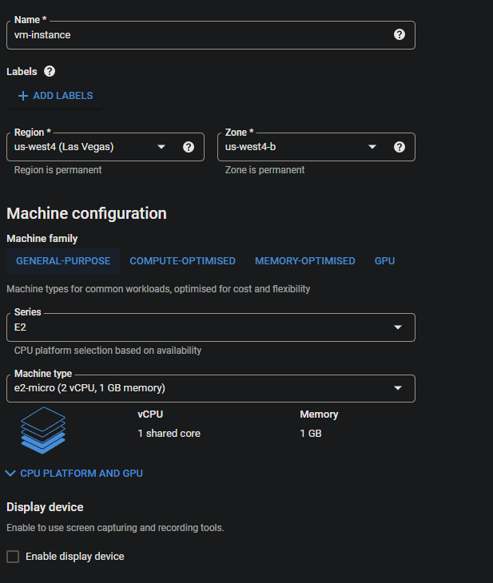

Google cloud platform guide
A guide for Google cloud platform (GCP).
APIs and services
When using working with GCP, the user will need to enable the APIs required for the features they will be using. Here is a list of APIs the user will need to activate for storage, workflows, dataflows, and triggers.
- Cloud:
- Cloud Pub/Sub API
- Cloud storage
- Cloud logging API
- Cloud storage JSON API
- BigQuery API
- Cloud datastore API
- Compute Engine API
- Workflow:
- Workflow API
- Workflow executions API
- Eventarc API
- Cloud scheduler API
- Dataflow:
- Dataflow API
This does not mean the user needs to make use of all these APIs, it only points out important cases
To activate any of the above, do the following: - On the dashboard, click on APIs and services

- Select Library. This will take the user to a library which contains the available APIs
- The simplest method, if the API name is known, is to search for the API in the search bar
- For this guide, type Cloud pub/sub api in the search bar and press Enter
- Select the Cloud Pub/Sub API result
- Click Enable
- Do this for all required APIs and services
If an API is required for a function by GCP which has not been activated, the user will be prompted to enable it.
Cloud storage
Create a new bucket
How to create a Storage bucket: - Go to Cloud Storage and click on Browser
- Click Create bucket
- Provide a unique name for the bucket and click Continue
- Choose a region of your choice and click Continue
Using a single Region type will be the most cost-effective option. Only use Multi-region when required.
- The user can decide on the storage type, storage class, access control and data protection which will suffice for their requirements
Default parameters/options should be sufficient for most cases. It is also important to consider the different storage classes, as this can affect the cost.
| Storage class | Minimum storage duration (days) | Retrieval fees (per GB) |
|---|---|---|
| Standard storage | None | None |
| Nearline storage | 30 | $0.01 |
| Coldline storage | 90 | $0.02 |
| Archive storage | 365 | $0.05 |
- Click Create
For more information on Cloud Storage and buckets, see https://cloud.google.com/storage/docs/json_api/v1/buckets.
Load data into a bucket
- Select the bucket to which data will be added
- Click on Create folder
- Open the newly created folder
- Click Upload files
- Select the file which needs to be stored in the bucket, and click Open. The file will be uploaded to the bucket

- The file can be renamed as follows:
- To the right, open the object overflow menu (button with three dots)
- Select Rename
- Rename the file as desired
- A file can be deleted from the bucket by selecting it (tick next to the file) and clicking on Delete
Workflow
This sections deals with creating a workflow in GCP.
- In the GCP menu, click on Workflows

- Click Create to start setting up a workflow
- Provide a workflow name, description (optional) and region
Using a single region option is a more cost-effective approach. Only use multi-regional if required.
- Select a service account. Do the following if you want to create a new service account:
- Click on Create a new service account
- Provide an account name, ID and description (optional). The user can also generate a random ID.
- Click on Create and Continue
- Now select the newly created service account

Description parameters are optional, but it is highly recommended to provide a good, but short description. This helps a lot if multiple users will be working on the GCP project.
- The user can also provide a label to link this workflow to a group. This is optional.
- Click on Add label
- Provide a Key and Value
- GCP provides two trigger types:

- Choose either type:
- Cloud scheduler: This is a recurring schedule option
- Click on Add new trigger and select Cloud scheduler
- Provide the following:
- A name, region, and time zone
- The frequency needs to be set as explained here: https://cloud.google.com/scheduler/docs/configuring/cron-job-schedules#defining_the_job_schedule
- Click Continue
- Set the workflow argument, log level and the service account as desired
- Click Create
- Eventarc: This is an event driven option (e.g. file uploaded to a bucket)
- Click on Add new trigger and select Eventarc
- Set the Trigger name as desired
- Choose an Event provider. Depending on the chosen provider, the parameters which follows may differ. For this example/guide Cloud Storage will be used
- Under Event, the user will note that there are numerous options, but for now we will use google.cloud.storage.object.v1.finalized This event occurs when a new object has been created in a bucket
- To select the bucket which should be monitored, click on Browse. Then select the desired bucket, or create a new bucket. Click Select
- Choose the Service account
- Grant permission as required for the chosen Region and Service account. If permissions are already set up, this option will not show to the user
- Click Save trigger
- Set up the workflow which needs to be performed. See the following for more information on this: https://cloud.google.com/workflows/docs/reference/syntax
- Click Deploy
- If the workflow has been successfully deployed, the user can perform the workflow. Click on Execute to go to the execute workflow section

- Click Execute
- Here is an example of an output from a Workflow

Dataflow
The GCP dataflow can be split into three main categories, namely Java, Python and notebooks. Essentially the outcome and aim of each category will be the same. For this guide focus will be on Python.
To enable dataflow developing for an account, add the Dataflow developer role to the service account.
Here is a short tutorial on creating a Dataflow:
- Let's first create a text file which will contain some words for our example:
- Create a new text file at a desired directory on your computer. The text file name can be anything (e.g. just_some_text.txt);
- Add some words to the text file. Which words you add does not matter, but here is an example:

- Upload the new file:
- Open Cloud storage
- Open an existing bucket, or create a new bucket
- Click Upload files
- Select the newly created text file and click OK
- Create a tempory storage folder for Dataflow:
- Click on Create folder and name it "temp"
- On the dashboard, click on Dataflow
- Click on Create job from template
A user can also create their own template, but for this example we will not be doing that.

- Provide a Job name
- Choose a Regional endpoint
The region will be best to be the same as your cloud storage. This will minimize costs.
- Set the Dataflow template to Word count. The Word count dataflow will execute code on a provided text file and return the number of cases the file contains each word
- To set directories the syntax will be gs://{bucket}/{folder}/{filename}. For example, gs://newb2/just_some_text.txt will refer to the text file named just_some_text.txt in the bucket named newb2. These directories can also refer to folders in a bucket. Set the directories as follows:
- Input file(s) in Cloud storage: The text file which contains the words (e.g. gs://newb2/just_some_text.txt). This will be the input for the dataflow
- Output Cloud Storage file prefix: This is the prefix which will be used for the output file (gs://newb2/just_some_text_result.txt). The counts for each word will be stored in this file
- Temporary location: Provide the temporary folder we created here (gs://newb2/temp). The dataflow will use this folder to store any temporary data used for processing
- Here is an example of the parameters:
- Click Run job
- The job will run for a few minutes. The output should be similar to the following:
- Once the dataflow finished running, go back to your bucket. There should be a new file, based on the name you have provided, in your bucket. In this example, the file is named just_some_text_result.txt-00000-000001

- Download the file
- The user should see something similar to the following:
This concludes the basic example for Dataflows.
BigQuery
Create a new table
- Click the View actions button for the project
- Click Create data set

- Select the Project ID
- Provide a Data set ID
- Select a Data location (region)
For cost-effectiveness, make use a single zone region. Multi-region is more costly.
- Click Create data set
- Click View actions for the newly created data set;
- Click Create table;
- Provide the required parameters and click on Create table

A dataset can contain multiple tables.
Table schema
The schema for a table contains all of the fields, field types, size, description, and other parameters based on the field type. To add or edit a Schema to the table, do the following:
- Click on the table so that it opens in a new tab in GCP
- Click Edit schema

- Click the Add field button
- Provide a Field name, Type, Mode and Description. Some schema options might be optional (e.g. Description). The parameters will also differ depending on the Type;
- The user can add several fields;

- Click Save to update the Schema
Notes
Some issues the user should avoid or may encounter:
- BigQuery will not allow loading of a table with the incorrect number of columns:
- Deleting unwanted fields will solve this problem
- Always base the schema on the table being loaded, but this can introduce other issues
- The names of each field needs to be the same. So the user needs to check the data prior to uploading it. This will also make it easier to automatically delete unwanted fields
- The data type needs to be the same for all features/rows of the table. A string cannot be imported into a float fields type
- Found an issue where the number of columns changes from a certain row (e.g. row 81), therefore the data cannot be loaded. These were resolved by just deleting a bunch of columns at the end of the file. Could not find any data in those columns, so not exactly sure what caused to problem (maybe spaces or tabs in the table elements)
- Most of these issues can be solved prior to uploading data, or in the Python code itself when a trigger event occurs
- Issues when importing a date column. BigQuery needs the data to be perfect for improting.
Python
Python can be used for trigger events for Storage bucket or Dataflow pipelines. Other languages, namely Java, are also supported.
Locally run python code
Python code can be run locally before running it on the GCP. Makes it easier to test code before uploading it. Firstly the user needs to create a service account JSON file, followed by setting up environmental variables in their OS and installing a few libraries/modules.
Service account key
The service account key will be used by the users OS to access the GCP account. The JSON key can be created as follows:
- Go to IAM and admin
- Select Service account
- Select the service account for which you want to create the JSON key
- Click on the Keys tab
- Click Add key and then Create new key
- Select JSON and click Create
- The new key will be created and the browser will download the JSON file
If the download fails, try using a different browser as some browsers causes issues.
Environmental variables
Windows environmental variables needs to be set up as follows: - Type environmental variables in the Windows start menu - Select Edit the system environmental variables - Under System variables, click New
- Set the variables as follows:
- Service account JSON key:
- Variable name: GOOGLE_APPLICATION_CREDENTIALS; and
- Variable value: Directory with filename to the JSON key file.
- GCP project:
- Variable name: GOOGLE_CLOUD_PROJECT; and
- Variable value: Project ID.

- Click OK
- The new environmenal variables will now be added
On Linux the user can do the following to set up the environmental variables: - Open the terminal - Service account JSON key: - Run the following: export GOOGLE_APPLICATION_CREDENTIALS="KEY_PATH", where KEY_PATH is the directory to the JSON key file - GCP project: - Run the following: export GOOGLE_CLOUD_PROJECT="PROJECT", where PROJECT is the ID of the project.
Accessing the GCP using Python code should now work.
Python modules and libraries to install
Required roles: - Dataflow admin; - Dataflow developer; - Dataflow worker; and - Service account user.
Install pip, if not installed: - sudo apt update - sudo apt install python3-pip
The following Python modules will be required: - pip install google-cloud-storage; - pip install google-cloud-bigquery; and - pip install google-cloud.
These modules should be installed locally if the user wants to perform Python runs locally, but also on the GCP terminal when code should be run on the platform as well. To check the list of installed Python modules, use pip list.
The following libraries should be installed for local Python runs: - gcloud command: - sudo snap install google-cloud-cli; and - sudo snap install google-cloud-sdk.
If the user will be making use of Apache-beam (Data flow pipeline), do the following to be able to run code locally: - Open the console - pip install wheel - Installing Apache-beam differs for Windows and Linux: - Windows: pip install apache-beam[gcp] - Linux: pip install apache-beam[gcp]
Take note that Windows uses a souble-quote, Linux uses a single-quote.
Running the code locally
Before adding code to GCP (e.g. for a trigger), it will be best to test the code locally as it can be slow to upload or deploy the code. Simply run the Python code using the normal console command: - python3 python_file.py
Bucket trigger events
A trigger event can be set up for a Storage bucket. Depending on the event (e.g. object.finalize will occur when a new file finished uploading to the bucket), code can be triggered. This guide will only explain how to do this for Python, but it can also be set up for other languages (e.g. Java). Add required roles: - cloudfunctions.functions.get - cloudfunctions.functions.create - cloudfunctions.functions.delete - cloudfunctions.functions.call - Any other required roles
Trigger event for Python
A trigger event for Python can be set up as follows: - main.py: This Python file will contain the functions which will be triggered when an event occurs. The file has to be named main.py. - requirements.txt: This file will consist of any modules which will be imported and used by the code. Here is two examples of requirements added to the text file: - google.cloud.storage - google.cloud.bigquery
- The code can be deployed by going to Cloud functions in GCP;
-
The code can also be deployed on the GCP to the bucket using the following command: gcloud functions deploy FUNCTION_NAME \ --runtime python39 \ --trigger-resource BUCKET_NAME \ --trigger-event TRIGGER_EVENT \ --project PROJECT_ID
-
The user can manually upload the data to the bucket or use the following command: gsutil cp FILE_NAME BUCKET_DIR
- To check the logs of the trigger, do the following command: gcloud functions logs read --limit 50 --project PROJECT_ID
- Variable descriptions:
- FUNCTION_NAME: The name of the method/function in the main.py file;
- BUCKET_NAME: The name of the bucket which will trigger the event. This should only be the bucket name (e.g. example_bucket);
- TRIGGER_EVENT: The event which will trigger the code (e.g. google.storage.object.finalize will trigger when a file finished uploading);
- PROJECT_ID: The ID of the project (not the name of the project)
- FILE_NAME: The local file the user wants to upload; and
- BUCKET_DIR: The bucket directory on GCP. This will consist of gs:// and the BUCKET_NAME (e.g. gs://example_bucket)
Pub/Sub trigger events
This section focuses on setting up a scheduled trigger event using Pub/Sub, Cloud function and Cloud scheduler, but other approaches are available.
- In GCP, open Pub/Sub in the menu
- Click Create topic
- Provide a Topic ID
- The other parameter can be left as is. Click Create topic
- Open your newly created topic
- Click on Trigger Cloud function at the top of the page. This will allow you to add function which will be triggered if the Pub/Sub is called
- Provide the required parameters for the Create function step:
- Environment can be left as 1st gen, but 2nd can also be used
- Provide a name in the Function name field
- Choose a Region which will be the same as the data/buckets/BigQuery which will be accessed
- Set the Timeout to 540 seconds (9 minutes)
- Set other settings as desired
- Under Source code select the programming language for Runtime (e.g. Python)
- Paste your code in the MAIN.PY tab
- Entry point should consist of the name of the function which will be called in the code segment pasted in MAIN.PY
The Entry point function needs to have two parameters, namely event and context. These parameters are included when the trigger event happens.
- Click Deploy function
- Now that the Pub/Sub topic and trigger function has been set up, we can set the schedule for when this should occur
- Go to Cloud Scheduler in the GCP menu
- Click Create job
- Set the parameters as follows:
- Name: As desired
- Region: Select the region which is used by your Sub/Pub topic
- Description: As desired
- Frequency: This consist of 5 values using this structure * * * * *, which is minute, hour, day of the month, month, and day of the week. * refers to all cases for that parameter. See https://cloud.google.com/scheduler/docs/configuring/cron-job-schedules for more information on how to set frequencies
- Time zone: Set as desired. South Africa Standard Time (SAST) is available as an option
- Click Continue to go to the Configure the execution section
- Select Pub/Sub as the Target type
- Select the Topic which contains the trigger function
- Add a message as desired
- Set other options as desired
- Click Create
The job will be executed based on the frequency set by the user. It will call the Pub/Sub topic, which in turn will trigger the Cloud function. To have a look at the function and execution, do the following: - Go to Cloud function in the GCP menu - Open the function. The user should see the metric
- This section shows all information related to the function, such is when it was called, if it failed, completed, or is currently running
- Go to LOGS to see the terminal responses and print from the active function
Dataflow pipeline using Python
When the user wants a Dataflow pipeline to make use of Python code a template needs to be generated from the Python code (other languages also supported, namely Java). This can be done as follows:
- This needs to be done on the GCP console (Linux-based terminal) and cannot be done locally:
- Open the cloud shell on GCP
- Click on More
- Select Upload
- Upload the files (e.g. Python code) as needed
- The files will now be uploaded to the console home directory;
- Run the following command in the GCP console to create the pipeline template:
python3 -m MODULE \ --runner DataflowRunner \ --project PROJECT_ID \ --staging_location STAGING_LOC \ --temp_location TEMPORARY_LOC \ --template_location TEMPLATE_LOC \ --region REGION
- MODULE: The Python file uploaded to the GCP console
- PROJECT_ID: ID of the project (not the project name)
- STAGING_LOC: The staging location for the pipeline (e.g. gs://pipeline_bucket/staging)
- TEMPORARY_LOC: Temporary location for the pipeline (gs://pipeline_bucket/temp);
- TEMPLATE_LOC: The location to which the JSON template will be saved (gs://pipeline_bucket/template);
- REGION: Region (e.g. us-east1)
If a template fails to generate, there is likely a problem in the code. The code needs to make use of Apache-beam, and minor issues will be a problem. For instance, code might work locally, but an issue might occur when running in the pipeline itself. For more information on Python template generation go to https://cloud.google.com/dataflow/docs/quickstarts/create-pipeline-python.
Compute Engine
A Dataflow pipeline requires a virtual machine (VM). This can be set up using GCP Compute engine. Follow these instructions to set up a VM:
- In the GCP navigation menu, select Compute engine
- Click on VM instances
- Click Create instance
- Provide the following parameters:
- Name;
- Choose a Region and Zone. Best will be to make use of the same region than what your other data in a bucket or BigQuery makes use of;
- Choose a Series and Machine type
- Other parameters can be left on default or changed as desired.

- Click Create
Be sure to choose the machine type as required. The costs will be higher to more processing power is used
Here is an example using a medium VM:
Here is an example of a high end VM:
Notice the cost difference! There are a large number of machine options, so be sure to choose as required.
Deploy pipeline Python code
Dataflow makes use of Apache Beam. This can be developed/deployed using the SSH console for a VM. Do this as follows:
- Go to Compute engine in GCP;
- Create a virtual machine (see Compute engine), or select an existing virtual machine;
- Click on SSH. This will open the SSH console;
- Install Python modules:
- pip install apitools
- pip install apache_beam[gcp] (this can run a very long time)
- pip install google
- pip install google-cloud-storage
- pip install google-cloud-bigquery
- pip install google-cloud
- Any other required Python modules (e.g. geopandas)
If git is not installed for the VM, follow the instructions here to install git: https://www.atlassian.com/git/tutorials/install-git.
- Clone the repo from GitHub or other sources. This will download the repo into the compute engine root folder
- Navigate in the console to the code which needs to be run
- If providing parameters as as variable from the console:
- Set the bucket, if required, as follows:
- BUCKET="
" - echo $BUCKET
- BUCKET="
- Set the project as follows:
- PROJECT="
" - echo $PROJECT
- PROJECT="
- Set up the environmental variables (see Environmental variables). This is required for authentication and local runs in the VM:
- The user will require the credentials json file for the service account (see Service account key).
Executing the pipeline:
- There are two options available. Local is faster, but cloud runs the pipeline on the cloud but is slower (the is shown In the GCP course). Here is how code can be run:
- Execute pipeline locally:
- python3 file.py --parameter $BUCKET --project $PROJECT otherParameters $PARAMETER --DirectRunner
- Execute in the cloud:
- python3 file.py --bucket $BUCKET --project $PROJECT otherParameters $PARAMETER --DataFlowRunner
BigQuery in Python
This section will deal with BigQuery in Python code.
The table schema, basically the attributes structure, is important to set up correctly in BigQuery and will cause issues if the user attempts to load a table into BigQuery using the incorrect structure for the table being loaded. A table schema makes use of JSON, and is easy to set up. Here is a code example:
SCHEMA = [ bigquery.SchemaField('Date', 'Date', mode='NULLABLE'), bigquery.SchemaField('Max_Temperature', 'FLOAT', mode='NULLABLE'), bigquery.SchemaField('Min_Temperature', 'FLOAT', mode='NULLABLE'), bigquery.SchemaField('Precipitation', 'FLOAT', mode='NULLABLE'), bigquery.SchemaField('Relative_Humidity', 'FLOAT', mode='NULLABLE'), bigquery.SchemaField('Solar', 'FLOAT', mode='NULLABLE'), bigquery.SchemaField('Streamflow', 'FLOAT', mode='NULLABLE'), ]